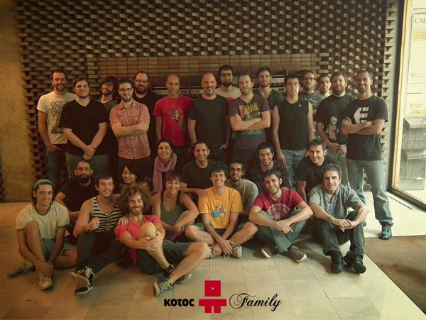
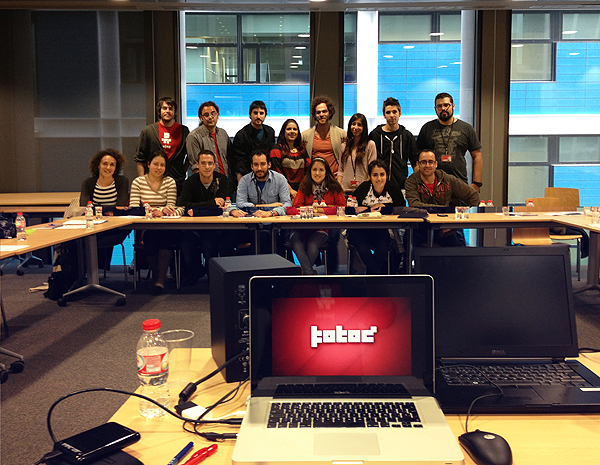
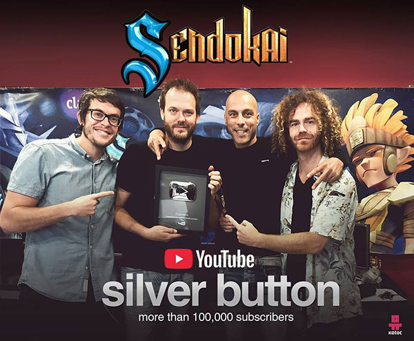
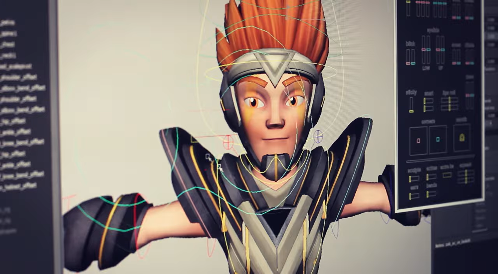
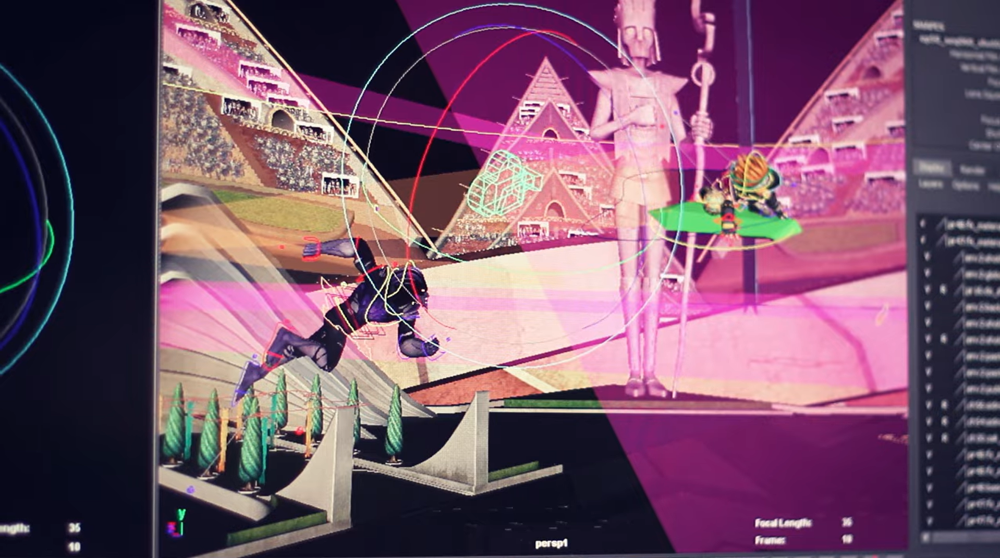

Inicios de la Empresa
Kotoc es una empresa de producción de contenido audiovisual fundada en 2006 en Barcelona. Se especializa en la creación y producción de propiedades intelectuales en CGI, incluyendo series de animación, campañas publicitarias y videojuegos. Entre sus proyectos más destacados se encuentran Desafío Champions Sendokai, Mutant Busters y Gormiti. Kotoc ha sido galardonada en numerosos premios, como los Premios Goya y Mipcom, y ha logrado expandir su presencia internacional a través de colaboraciones con plataformas como RTVE y Cartoon Network. Han creado distintas marcas, entre las que se encuentran las propiedades intelectuales Desafío Champions Sendokai, Mutant Busters, y Laland, entre otras. Su trabajo ha sido reconocido y galardonado en certámenes y convenciones de prestigio como los Premios Goya, LAUS, PromaxBDA, Mipcom, Art Futura y GameLab.



Una pequeña entrevista a Freddy(Uno de los creadores) y sus respuestas.
-
¿Cómo creásteis Kotoc?
Kotoc fue una idea que tuvimos entre varios compañeros para crear una empresa con la que pudiéramos crear y contar historias […].
¿Fue una apuesta arriesgada al ser una empresa española la que producía estos productos de entretenimiento?
Al principio sí, porque uno de nuestro primeros proyectos resultó ser un fracaso. Pero aprendimos mucho de él y supimos emplear en nuestros siguientes proyectos los nuevos conocimientos que adquirimos […]. Gracias a este proyecto que comenzamos hace unos cuántos años, hemos tenido la oportunidad de crear historias […] a las que les ponemos mucho empeño y corazón […].
productos se han consumido mucho en España, pero algunos han sido emitidos en gran parte de Latinoamérica. ¿Cómo llegaron algunos de vuestros productos a expandirse internacionalmente?
Algunos de los proyectos que hemos realizado […] los hemos hecho en colaboración con otras empresas como RTVE en el caso de «Desafío Champions Sendokai«, […] y dado al gran éxito que tuvo se valoró la posibilidad de emitirla en otros países […] y finalmente se hizo […]. Desde el 2020, la sociedad ha sufrido la pandemia del Covid-19 y sus consecuencias.
¿Cómo os afectó a vosotros?
Bueno, la pandemia fue una situación general muy dura para la sociedad […]. En nuestro caso, nos pilló en plena producción de la tercera temporada de ‘Gormiti’ […]. Eso sí […], la cuarentena nos ayudó a instalar el teletrabajo, un método de trabajo que nos facilitó trabajar mientras estuvimos en cuarentena […], y que nos ayuda brindando mayor comodidad a la hora de trabajar a todos […]. Algunos desde su casa, otros desde su pueblo… y el trabajo fue igual o mejor. También utilizamos el servicio de asistencia psicológica que tenemos en Kotoc, para que la gente puede expresar sus dudas e inquietudes en grupo. En Kotoc estamos en un transformación humanista, y el pistoletazo de salida fue la pandemia.
Motores Gráficos
Los motores que usan son:- Unreal Engine — uno de los motores más potentes y usados en producciones AAA y CGI, con gran capacidad para animación, cinemáticas y renderizado en tiempo real
- Unity — muy extendido en videojuegos multiplataforma, animación y proyectos transmedia, compatible con móviles, consolas y VR
- Game Maker Studio— usado para juegos 2D y proyectos indie, aunque menos probable para CGI compleja
- Motores propietarios — muchas empresas desarrollan motores internos para animación o renderizado (como Frostbite o Snowdrop)
por lo que Kotoc podría tener herramientas internas para CGI, aunque esto no está confirmado.


.png)
.png)
.png)